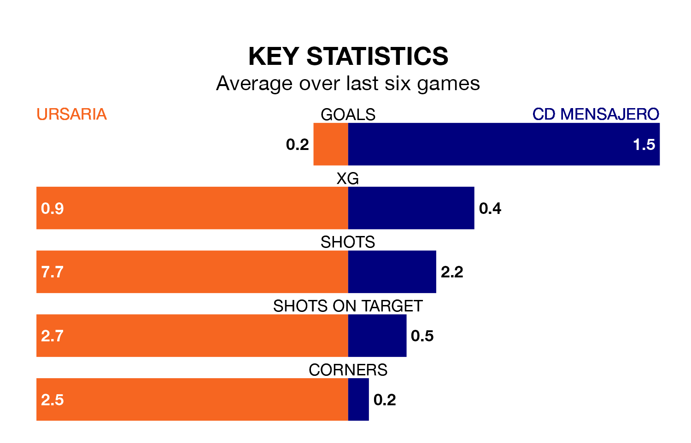

Struggling CD Mensajero face Ursaria away at the Estadio Polideportivo La Juventud on Sunday looking to build on a win in their last league outing.
After securing all three points with a 1-0 victory over UD San Fernando on January 14, Mensajero sit 17th in Segunda División RFEF Group 5.
They travel to play an Ursaria side 10th in the standings, who lost in their last match, 1-0 against Getafe B.
Ursaria are in bad form in Segunda División RFEF Group 5, with one win and five losses from their last six games.
With two wins and two draws over that period, Mensajero's form is better – they have taken eight points from 18, compared to the hosts' three.
With 18 goals in 18 games so far this season, Ursaria are scoring at below the league average rate with 1.0 goals per game. And they are conceding at an average rate, letting in 20 goals at a rate of 1.1 per game.
The away team, meanwhile, are average scorers, with 1.1 goals per game. They have conceded 1.6 goals per game.
Updated: 06:13 (UTC), 18/01/24